Atmospheric Shaders
Fullscreen GLSL experiments exploring the boundary between darkness and luminance. Smoke, liquid, silk, aurora, and deep space, each built as a single self-contained HTML file.
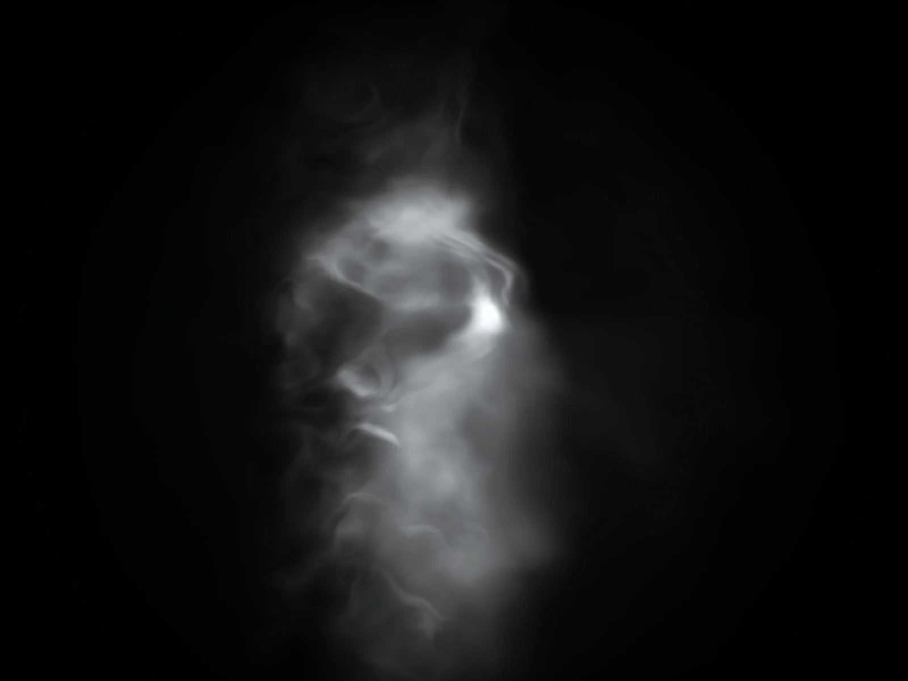
Extinguish Smoke
Closest to the XorDev reference: monochrome ribbon smoke with a dark cinematic frame.
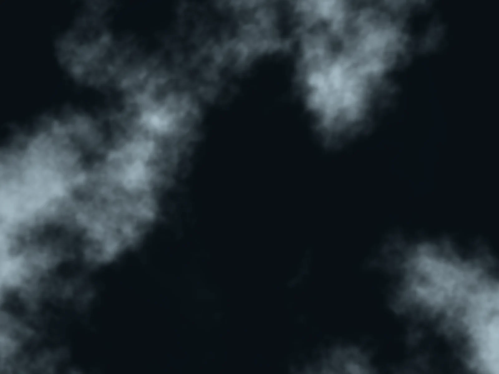
Veil Drift
A softer layered fog field with pale blue highlights and slower broad motion.
Linen Flow
Minimal flowing bands with warmer silver tones and a cleaner, more graphic silhouette.
Ember Velvet
Deep charcoal smoke with restrained copper warmth for a richer editorial hero mood.
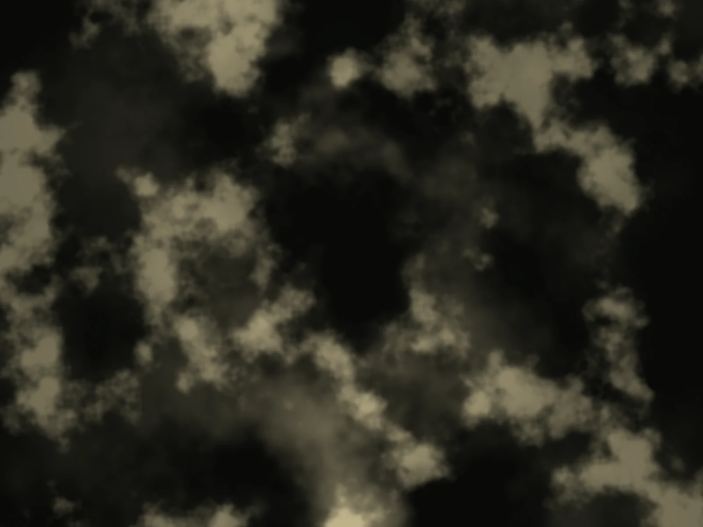
Auric Mist
Muted gold highlights drifting through dark olive shadows with a calm luxury finish.
Noctis Bloom
Blue-black atmosphere with cool champagne light for a more tech-luxury brand direction.
Obsidian Tide
Dark graphite liquid with silver caustic ribbons and a restrained editorial shimmer.
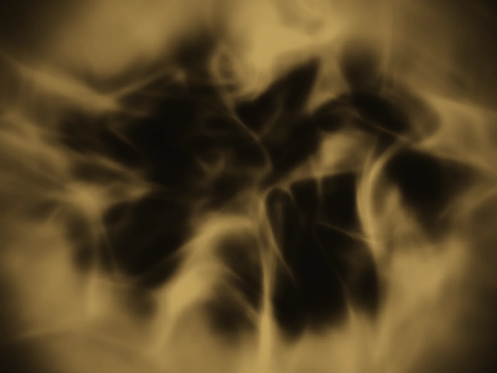
Gilded Current
Soft gold reflections drifting across a near-black surface with low-key depth.
Midnight Pool
Blue-black liquid interference with cool pearl highlights for a quiet tech-luxury feel.
Glass Veil
A softer glass-liquid surface with diffused highlights, deep blue shadows, and gentle premium motion.
Satin Drape
Soft satin folds with drifting highlights and a silky mauve sheen inspired by luxury fabric surfaces.
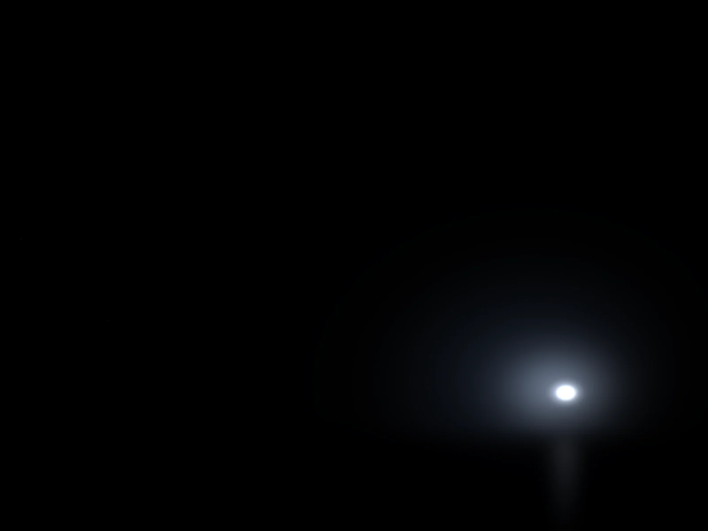
Aurora Borealis
Realistic green-cyan aurora curtains with vertical rays, stars, moon glow, and a dark arctic horizon.
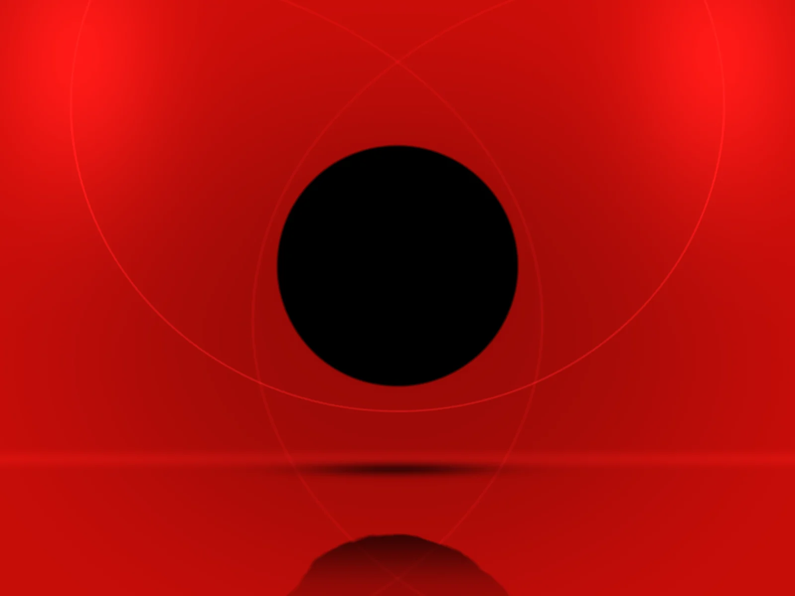
Void Levitation
A monumental matte-black void levitating inside a saturated red chamber with soft architectural curvature and reflection, inspired by an installation by teamLab.
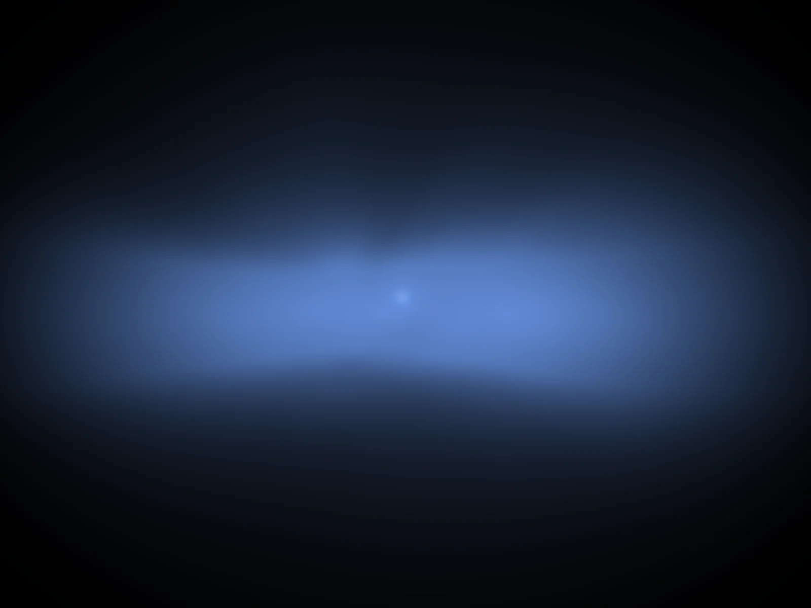
Nucleus Drift
A luminous moving core suspended inside a smoky volumetric field with cool monochrome depth and restrained sci-fi motion.
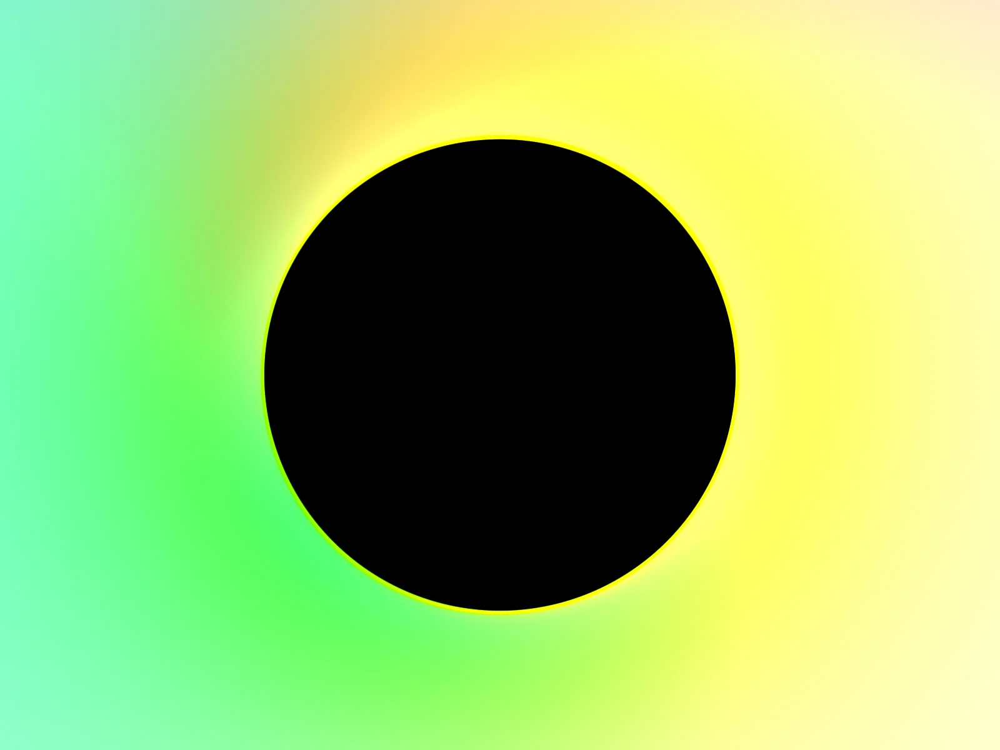
Helix Void
A chromatic halo rotating around a matte-black void, with shifting colour pulled from a twisting dark tunnel.
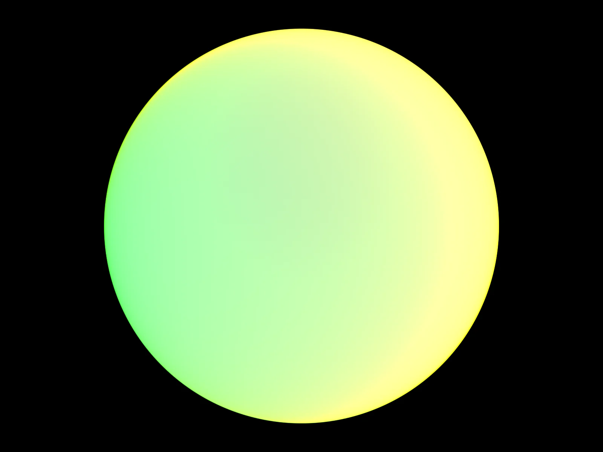
Helix Core
The inverse of Helix Void. Chromatic colour fills the sphere against a pure black field, with a soft iridescent rim.
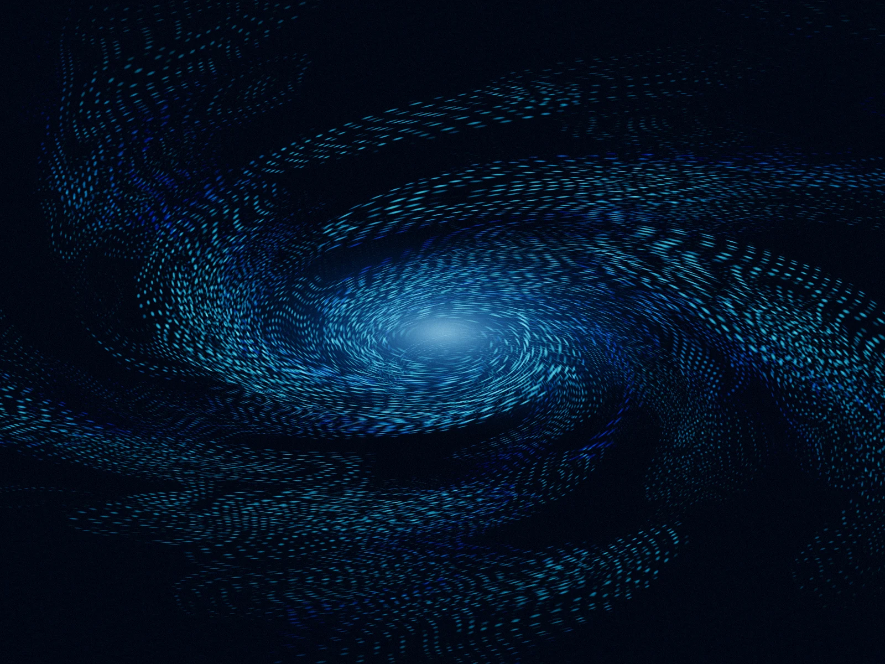
Blue Vortex
A glowing cyan and blue vortex with swirling strings and dotted particle rings.
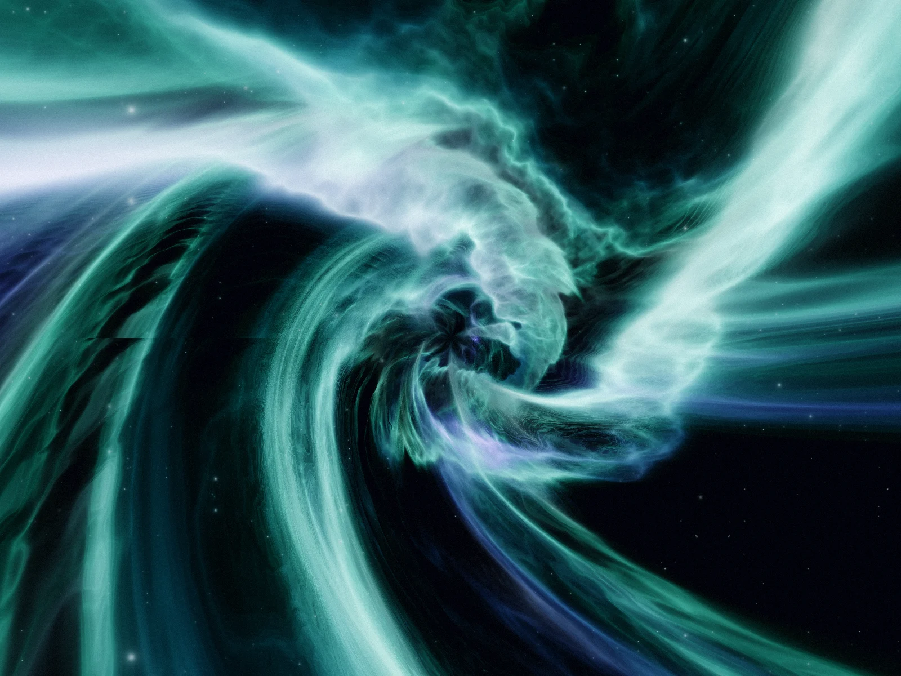
Nexus Silk
An infinitely zooming, continuous log-polar tunnel sculpted from flowing, multi-chromatic FBM noise.
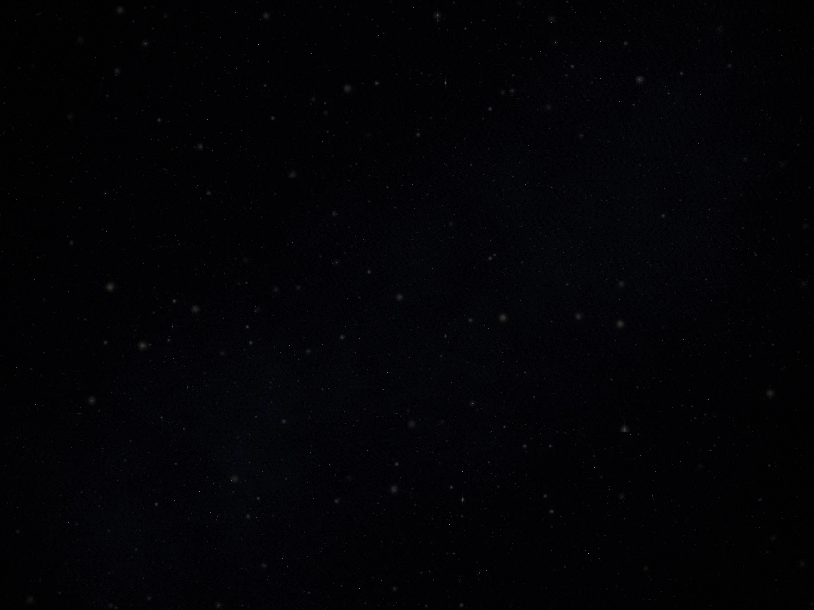
Star Field
A deep dark sky with layered stars twinkling at different depths, some glowing softly with a cool blue haze.
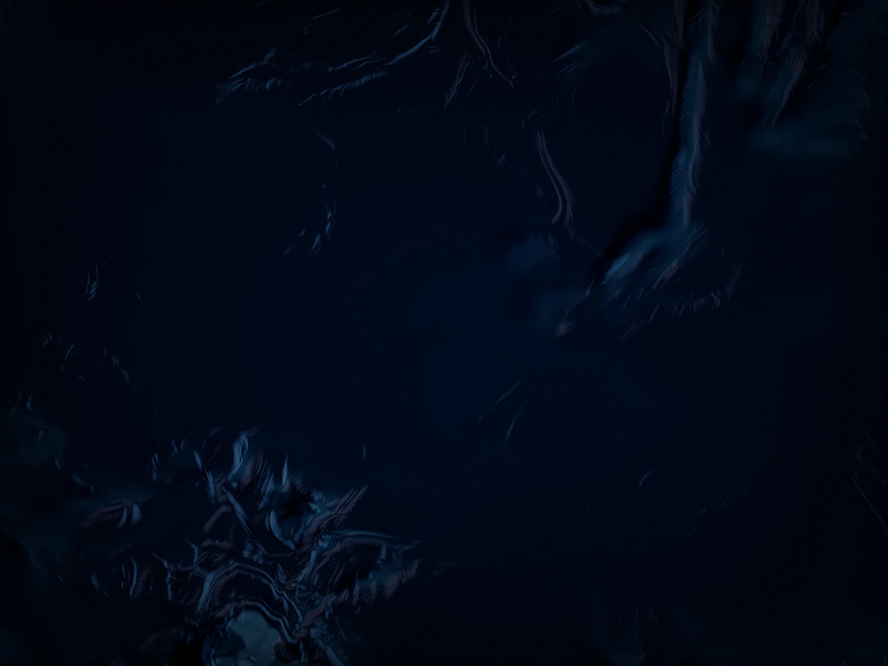
Ocean Labs
Deep dark ocean surface with warped fluid dynamics, warm sun highlights, and cool blue undertones.
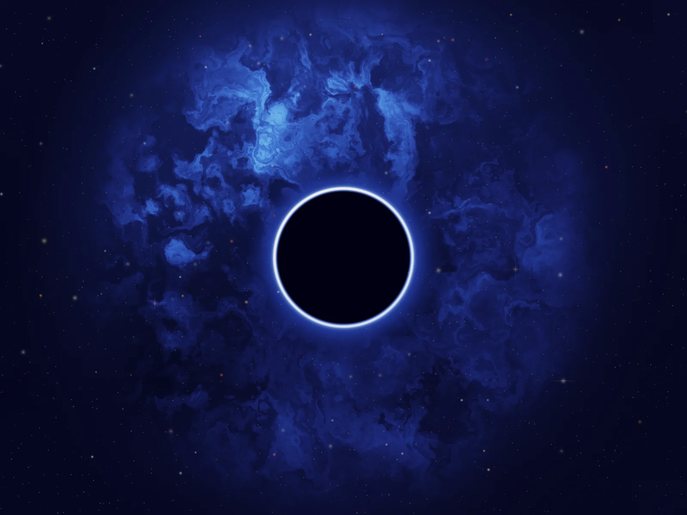
Event Horizon
A black hole with layered accretion rings, orbiting debris, photon rim glow, and a dense star field.